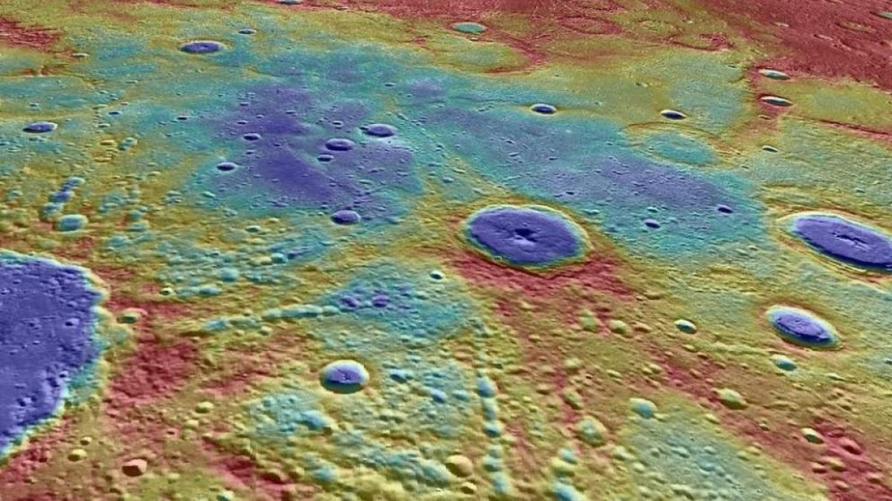
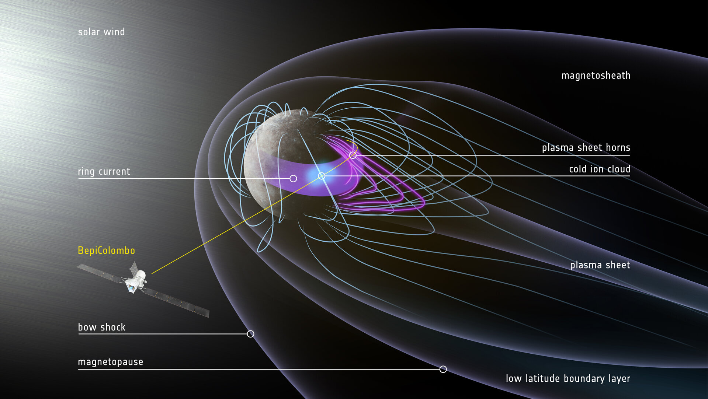

☀️ Mercúrio: O Mundo dos Extremos
Mercúrio é o planeta mais próximo do Sol e apresenta um dos ambientes mais extremos do sistema solar. Sem uma atmosfera significativa, ele não consegue reter calor, o que resulta em variações térmicas intensas entre o dia e a noite.
Durante o dia, sua superfície pode ultrapassar 400°C, enquanto à noite despenca para temperaturas negativas severas. Essa ausência de equilíbrio torna o planeta um exemplo claro de como a proximidade com o Sol não garante estabilidade.
Um planeta sem proteção natural
Sem uma camada atmosférica eficiente ou um campo magnético robusto, Mercúrio fica exposto diretamente à radiação solar, o que contribui para um ambiente altamente hostil e inóspito.

🪐 Estrutura e Dinâmica
Mercúrio é um planeta rochoso com uma superfície repleta de crateras, resultado de bilhões de anos de impactos. Sua estrutura interna é dominada por um grande núcleo metálico, proporcionalmente maior do que o de outros planetas.
Seu movimento ao redor do Sol é rápido, completando uma órbita em apenas 88 dias terrestres, enquanto sua rotação é lenta, criando dias longos e contrastantes.
Velocidade e contraste
Essa combinação de rotação lenta e translação rápida gera um dos ciclos mais incomuns do sistema solar, reforçando o caráter extremo e singular do planeta.
